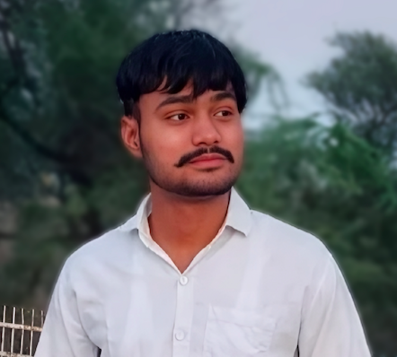
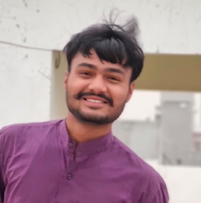

Kush Saini
Class : 10th
Score: 352/500
Class: 12th
Stream: Medical🩺
Knowledge About : Body Organs
Deep Knowledge in Water

Kush Saini
Class : B.C.A
Chaudhary Devi Lal University, Sirsa
Score: 3263/5100
Deep Knowledge in Coxial Cable, Optical Fiber , Twisted Pair Cable, Electronics Components etc.

Kush Saini
Class : M.C.A
Section : B
Roll no: 131
What happens is always for the best
Keep Smile😁